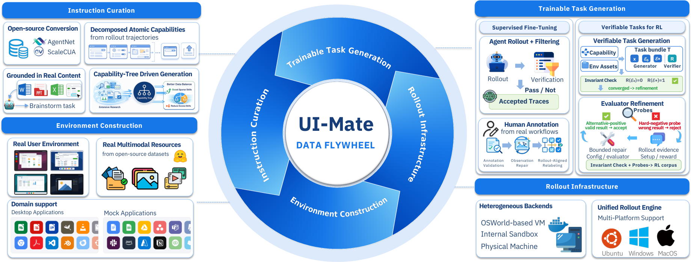
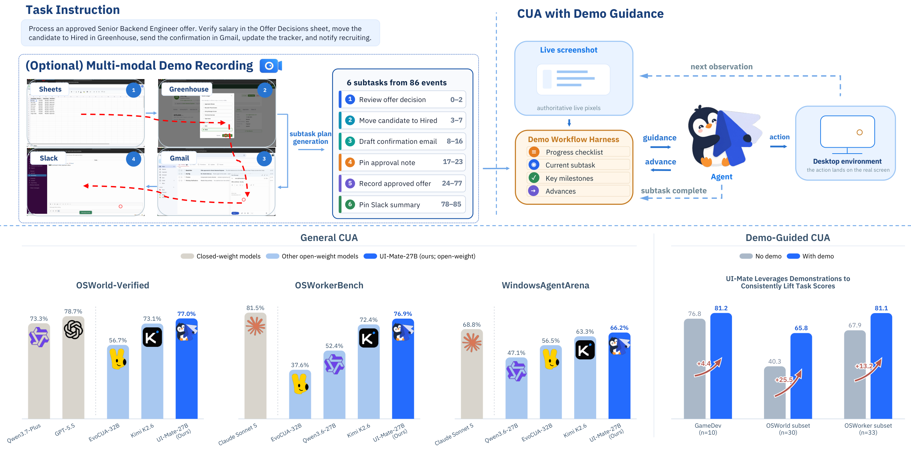
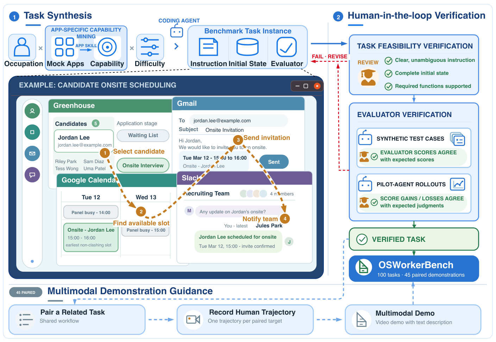

Environment-grounded training
Closed-loop data flywheel: task & environment construction, filtered rollouts, capability-tree rebalancing, then SFT + online RL.

Strong general computer use — plus one demonstration when the instruction alone is not enough.
Tencent HY Frontier · Multimodal Agent Team
Links marked with a dashed border are not public yet.
An open-weight foundation GUI agent: environment-grounded training plus in-context demonstration learning — show a procedure once instead of spelling every convention in a prompt.

A closed-loop data and training stack, demonstration-guided execution, and an office benchmark that isolates what a demo adds.
Closed-loop data flywheel: task & environment construction, filtered rollouts, capability-tree rebalancing, then SFT + online RL.

Record once, then turn it into a captioned subtask workflow. The live screenshot stays authoritative — the demo is guidance, not a script.
Native recorder · before/after screen for every action
Before / after screens + raw clicks, keys, text
VLM: observation · intent · action · verify
71 events → 6 subtasks with completion criteria
Human edit → reusable demo in the library
Authoritative live pixels
Exposes only the active subtask
Current: Write sheet
Decides from screen + guidance
Real mouse & keyboard
Harness keeps the checklist; the run ends after one or two subtasks complete.
100 long-horizon office tasks across 41 apps. Paired demos isolate what one demonstration adds beyond baseline skill.

General computer use on public benches, then the lift from one demonstration.
Open-weight comparison. OSWorkerBench reports strict success / progress.
| Model | Size | OSWorld-Verified | WindowsAgentArena | OSWorkerBench |
|---|---|---|---|---|
| UI-Mate-27B | 27B | 77.0% | 66.2% | 41.0% / 76.9% |
| UI-Mate-9B | 9B | 66.2% | 61.7% | 34.0% / 66.6% |
| Kimi-2.6 | 1T-A32B | 73.1% | 63.3% | 40.7% / 72.4% |
| Qwen3.6-27B | 27B | — | 47.1% | 23.3% / 52.4% |
| ScaleCUA-Qwen3.5 | 9B | 68.7% | 38.1% | 16.3% / 38.3% |
Average task score, without vs. with demo.
General CUA on a real macOS desktop. DemoCUA clips coming next.
Drop the recording into assets/demos/ to replace this placeholder.
Apple Silicon macOS app. Download the DMG, then follow the usage guide for permissions, model setup, and demos.
App requires Apple Silicon Mac · Intel Macs cannot run the client
If UI-Mate is useful in your research, please cite the technical report.
@article{uimate2026,
title = {UI-Mate Technical Report: Advancing Open-Weight Foundation GUI Agents
with In-Context Demonstrations},
author = {Multimodal Agent Team, Tencent HY Frontier},
journal = {arXiv preprint},
year = {2026}
}
Update the entry with the arXiv identifier and full author list once the report is public.